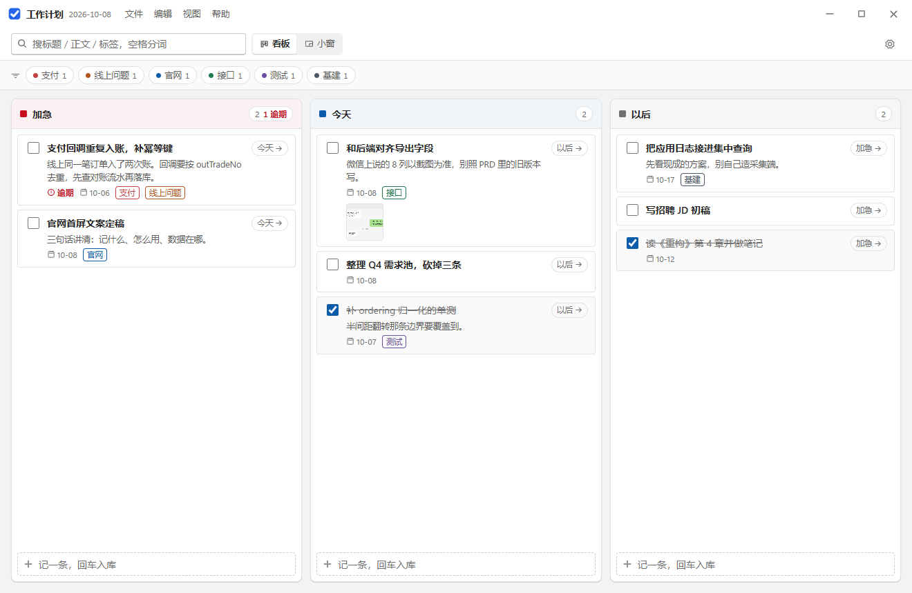
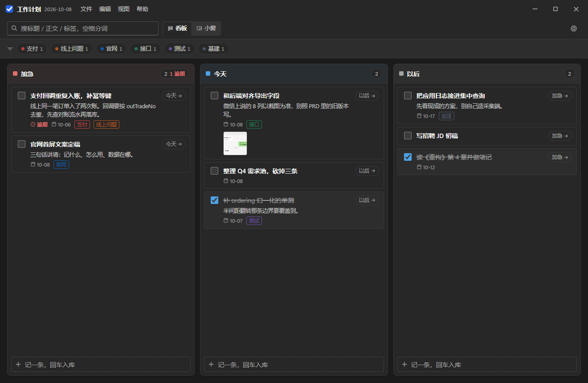
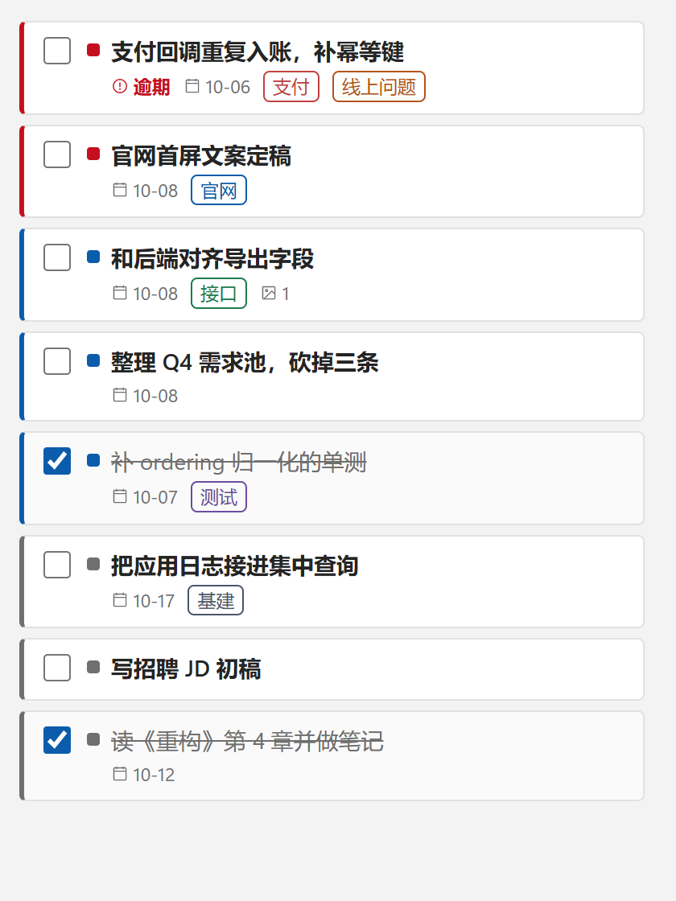
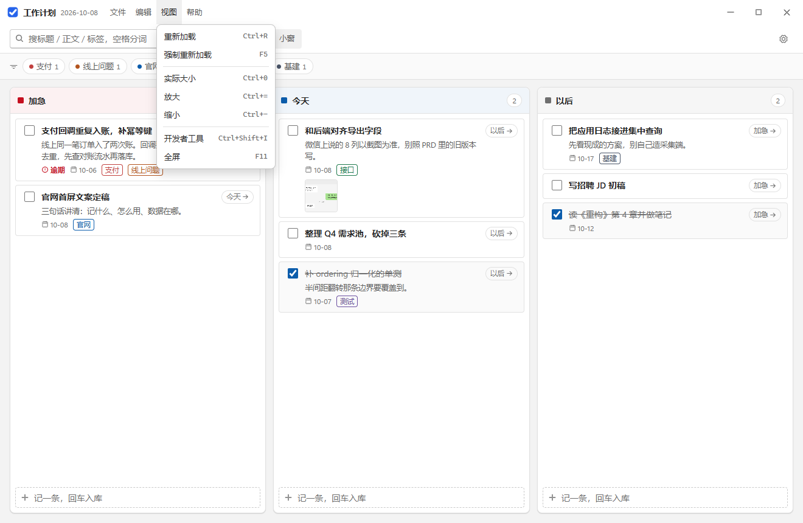
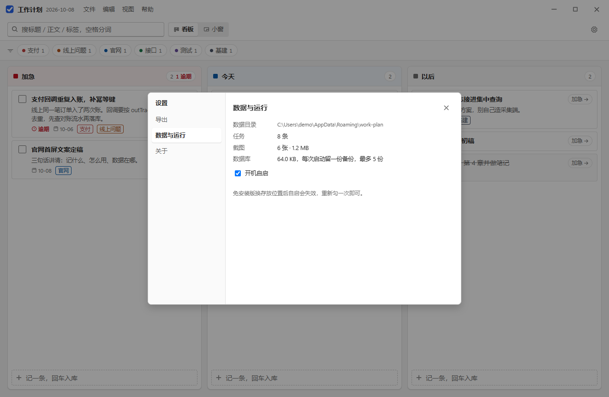

Windows 桌面应用 · 完全离线
把一天要干的事，摊在三条泳道上
加急、今天、以后——一眼看出什么必须现在做、什么可以排后。
文字记不下就把微信、QQ 的聊天截图直接 Ctrl+V 贴进来，
事情和它的证据待在同一条记录里。
- 不需要安装，双击即用
- 不注册、不登录、不联网
- 数据就是一个本地文件夹
- 明暗跟随系统

- 1自定义标题栏：菜单条、视图切换、检索、设置都在窗口里，不占系统标题栏
- 2检索框：空格分词，命中范围是标题 / 正文 / 标签名
- 3标签 chips：多点为 AND 过滤，尾巴那个数字是挂了它的条目数
- 4三条泳道：列头带档位色与计数，列内可拖拽排序
- 5逾期：计划日过了还没勾掉，标红并顶到本列最前
- 6聊天截图缩略图：点开看大图，还能就地裁一块
三档，不是优先级列表
「高 / 中 / 低」最后都会变成一堆「高」。三档泳道逼的是另一个问题：这件事是现在必须处理、今天之内，还是可以推以后。
- 加急红色列头。逾期计数直接写在列头上，红了几个一眼看到；这一档的条目永远排在最前，不会被折叠或分页藏起来。
- 今天蓝色列头。计划日填到「天」就够，不用排时间块；到期没做自动变逾期，做了就沉到本列底部，按完成时间倒序。
- 以后灰色列头。想法、待办、别人的请求先落在这里，不占今天的注意力。拖到别的列就改档，不用打开编辑框。
拖动就是改档，也是排序
列内上下拖动调整顺序，跨列拖动直接换档；不想动鼠标就点卡片右下角的 → 以后 循环切档。排序用间隙编号，只写被拖的那一条，不会牵动整列。
计划日永远不会把你的条目藏起来——这一点是刻意的：过滤器只帮你少看，不替你决定什么不算数。

聊天截图是一等公民
需求是微信里说的，口径是群里定的。把它们另存到别处、回头再找文件名，这条待办就已经废了。
截图 → Ctrl+V，不用切换模式
- 剪贴板里是图，就落盘成附件；是文字，就照常当正文输入。
- 也可以把图片文件直接拖进来，原文件不被移动、不被改名。
- 同一张图重复粘贴只存一份（按内容哈希去重），跨条目共享同一份文件。
- 长边超过 2000 像素自动缩放，微信 4K 截图也不会把磁盘吃掉。

看大图，顺手裁一块
点缩略图进灯箱，「裁剪这一块」框选你要留的段落，滚轮或滑杆调放大倍率，「存为新截图」——原图那张还在，裁出来的是一条新附件，并记着自己是从哪张图裁的。
于是「只关心那两行对话」这件事，不需要打开任何图片编辑器。


把它钉在屏幕右上角
看板适合规划，小窗适合一直看得见。顶栏点「小窗」，主窗隐藏，换成一个默认 420×560、可以拖边改大小的置顶无边框窗口：别的窗口盖不住它，也不占任务栏。
- 三条泳道合并成一条列表，顺序仍是加急 → 今天 → 以后，用左侧色条和小色块区分档位。
- 默认只显示内容条：标题、三档计数、搜索框、视图切换全部收起，鼠标移入才展开，移出再收起。
- 勾一下就完成；点文字回到三列看板并自动打开这条详情，数据当场重拉。
- 想挪位置就抓顶边那条窄把手；想改大小抓左 / 右 / 下三条边和下角，最小 300×320，再小会把标题行和列表挤坏。顶栏的「小窗」和这里的「看板」是同一个分段控件。


找得到，也带得走
中文全文检索、标签 AND 过滤、导出成 md 或 csv。没有云同步，因为你的数据本来就在一个文件夹里。
检索与整理
- 空格分词的与匹配：「导出 csv」= 两个词都命中才显示，范围含标题、正文、标签名。
- 标签在详情里输入名字回车即建即挂，顶栏第二行出现带计数的 chips。
- 菜单条长在标题栏上：文件 / 编辑 / 视图 / 帮助，项右侧直接标着快捷键。

设置与导出
齿轮打开一个居中弹窗，左侧菜单分三区：导出（Markdown / CSV）、数据与运行（目录、条数、体积、开机自启）、关于（版本与退出）。
- Markdown：三档分节、完成项打勾、正文缩进、截图按相对路径引用，直接进仓库或周报。
- CSV：带 BOM，Excel 打开中文不乱码；逗号、换行、引号按 RFC 4180 转义。

你的数据就是一个文件夹
没有账号，没有服务端，没有遥测。整个应用不发起任何网络请求；关掉网线也照常工作。
work-plan\
workplan.db
attachments\
2026\10\a41f9c27.png
backups\
workplan-20261008-092000.db
位置固定在 %APPDATA%\work-plan。拷走这个文件夹就是迁移，删掉就是清空；想恢复，把 backups\ 里任意一份复制成 workplan.db 覆盖即可。
存储用的是 Electron 内置的 SQLite，零原生模块：不需要装 Visual Studio Build Tools，也不需要 node-gyp。
| 文件 | 作用 |
|---|---|
workplan.db | 一个文件存下所有条目、标签、附件索引与排序号 |
attachments\YYYY\MM\*.png | 截图按年月落盘，库里只存相对路径 |
backups\workplan-*.db | 每次启动先做完整性检查再备份，只保留最近 5 份 |
工作计划-*.md / .csv | 导出的默认落点 |
系统要求
| 项目 | 说明 |
|---|---|
| 系统 | Windows 10 / 11，x64 |
| 安装 | 免安装 portable，双击即用，不弹 UAC |
| 体积 | 约 97 MB |
| 运行时 | 自带，无需另装 Node 或 VC++ 运行库 |
| 网络 | 不需要 |
一分钟走完一遍
记一条 → 判档 → 贴聊天截图 → 裁一块 → 切小窗钉在右上角 → 导出 md。
演示视频准备中：把录屏保存为 site/media/walkthrough.mp4，刷新后这里自动换成播放器。
下载 v0.1.1
单个 exe，双击即用。数据留在你自己的机器上。
更新日志
| 版本 | 内容 |
|---|---|
| v0.1.1 | 小窗改成可拖拽调整宽高，并设了 300×320 的下限（实测再小就会把标题行裁掉、列表只剩两行）。顶边仍是移动把手，缩放抓左 / 右 / 下三条边与下角。 |
| v0.1.0 | 三档泳道与拖拽改档、计划日与逾期高亮、聊天截图粘贴与局部裁剪、标签与中文全文检索、导出 md / csv、置顶小窗模式、自定义标题栏与菜单条、启动自动备份、托盘与开机自启。 |